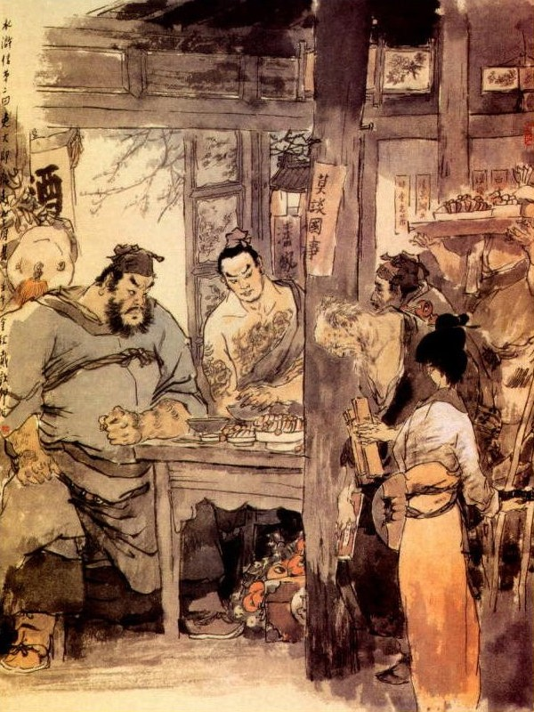
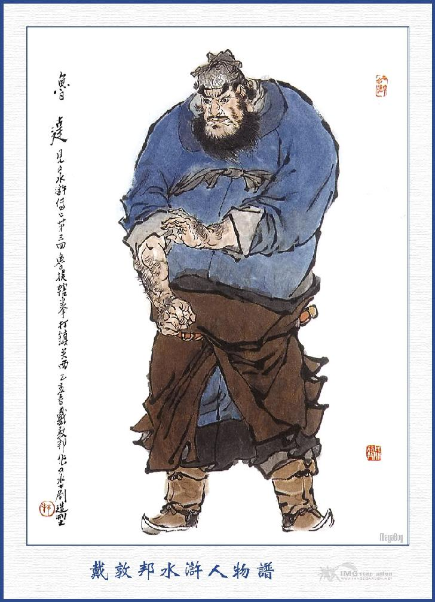
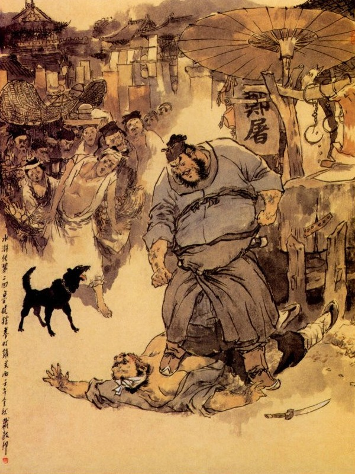

Sử Tiến hỏi Chu Vũ rằng:
- Bây giờ các bác tính làm sao cho tiện?
Chu Vũ đứng lên nói:
- Ngài là một người lương thiện vô tội, chỉ vì chúng tôi làm cho liên lụy đến người, vậy xin ngài cứ trói ba chúng tôi đem nộp cho quan Huyện, thế là không còn lôi thôi nữa?
Sử Tiến lắc đầu đáp rằng:
- Nếu làm thế thì ra tôi đánh lừa đến đây, để bắt các bác mà lấy thưởng hay sao? Đại trượng phu ở đời có đâu như thế mà để tiếng chê cười cho thiên hạ hậu thế, vậy bây giờ chỉ có là sống cùng sống mà chết cùng chết là hơn, được các bác cứ ngồi đó, để tôi ra hỏi lại xem sao rồi chúng ta sẽ liệu.
Nói đoạn chạy ra bờ tường, trèo lên thang quát hỏi:
- Bớ các ngươi, đêm hôm khuya khoắt, các ngươi định đến đây cướp phá nhà ta đó, hay sao?
Hai tên Đô Đầu ở ngoài thấy tiếng Sử Tiến liền đáp:
- Đại Lang ơi! Đại Lang không cần hỏi, đã có tên nguyên cáo là Lý Cát ở đây.
Lý Cát la lên rằng:
- Tôi có biết gì đâu? Nhân hôm nọ tôi nhặt được cái thư của Vương Tứ, đánh rơi ở trong rừng, tôi vội đem lên nộp quan thì ngài sai tôi dẫn đến đây để bắt đấy thôi.
Sử Tiến nghe nói cả giận, quay lại quát hỏi Vương Tứ rằng:
- Sao ngươi bảo với ta, không có thư trả lời mà bây giờ lại xảy ra như thế?
Vương Tứ luống cuống trả lời:
- Đại Lang tha lỗi cho tôi, hôm ấy vì say rượu đánh rơi mất thư lúc nào không biết.
Sử Tiến bầng bầng quát mắng rằng:
- Quân súc sinh này, như thế còn tin cậy được việc gì nữa? Rồi quay ra bảo với lũ Đô Đầu ở ngoài rằng:
- Nếu vậy thì hãy cứ đợi ở ngoài, để tôi sẽ trói phạm nhân đem ra nộp vậy.
Ngoài kia hai tên Đô Đầu sợ uy thế của Sử Tiến cũng đành phải vâng lời đứng ở ngoài, không ai dám ho he gì cả. Sử Tiến nói xong, quay xuống gọi Vương Tứ ra vườn sau, đưa cho một nhát dao vào cổ, chết thẳng còng queo, rối trở vào gọi người nhà thu xếp các đồng tiền nong tế nhuyễn, gói lấy một ít vào tay nải, còn thì vất để nguyên cả đó. Đoạn rồi cùng với bọn Chu Vũ, mỗi người dắt một con dao sau lưng, sai các gia nhân đều cầm dao cầm gậy, khoác tay nải lên vai, lấy lửa đốt trang viện rồi mở thẳng cổng xông ra. Sử Tiến đi trước, Chu Vũ, Dương Xuân đi giữa, còn Trần Đạt cùng với bọn lâu la và gia nhân đi chặn sau. Vừa ra khỏi cổng thì bắt gặp ngay hai tên Đô Đầu và Lý Cát đương luống cuống ở đó, Lý Cát thất kinh toan chạy, bị Sử Tiến đưa một dao chém làm hai đoạn. Còn hai tên Đô Đầu cũng bị Dương Xuân, Chu Vũ tặng cho mỗi kẻ một đao kết liễu hai tính mạng. Huyện Úy thấy vậy, sợ hãi kinh hoàng, tế ngựa chạy trốn, không dám quay cổ lại nữa, bọn dân thổ cũng tản mác chạy mau cho thoát mạng nốt.
Sử Tiến cùng bọn Chu Vũ chạy về trại Thiếu Hoa Sơn để nghỉ. Khi về tới trại, Chu Vũ sai lâu la giết dê trâu làm tiệc ăn mừng rồi lưu Sử Tiến ở đó, Sử Tiến ở được mấy hôm, chợt trong bụng nghĩ: "Mình chỉ vì cứu ba người này mà nhất đán đốt mất cả cửa nhà cơ nghiệp, lại gây vạ với thổ quan thì bây giờ ở đây, sao cho tiện". Nhân nói với Chu Vũ rằng:
- Tôi có ông sư phụ là Vương Giáo Đầu, hiện theo ở bên phủ Kinh Lược Châu Quan Tây, tôi định ý đi tìm đã lâu, song ngặt vì phụ thân mới mất, cho nên tôi chưa quyết định xong, tới nay đã xảy ra câu chuyện thế này, dẫu muốn không đi không được. Vậy tôi xin từ giã anh em để đi tìm sư phụ.
Chu Vũ va hai người kia đều có ý muốn lưu lại:
- Xin quan bác hãy tạm ở đây ít bữa để bàn định xem sao? Nếu quan bác không thích cái nghề lạc thảo này thì xin đợi khi yên lặng rồi, chúng tôi sẽ theo về sửa sang trang viện để liệu cách làm ăn có được không?
Sử Tiến nói:
- Đành vậy, nhưng bây giờ tôi nóng lòng muốn tìm thấy ngay sư phụ mà kiếm xem có kế gì xuất thân, để được hả lòng một chút.
- Vậy thì quan bác ở đây làm ông Trại Chủ, lại chẳng khoát hoạt lắm sao? Chỉ e trại đây nhỏ hẹp, không đủ cho quan bác ở thôi.
- Có lẽ nào thế? Ông cha tôi khi xưa vốn là người lương thiện, nay tôi đem thân đến đây làm cho ô nhục hay sao? Cái đó xin đừng nói đến nữa.
Bọn Chu Vũ thấy vậy cũng không dám lưu lại, Sử Tiến để cho bọn trang đinh ở lại đó, còn mình thu thập hành lý gói vào khăn gói mà sắp sửa đi tìm Vương Tiến. Bấy giờ Sử Tiến đầu đội mũ dương chiên lớn, có cái mào đỏ ở trên, mình mặc áo chiến bào, lưng thắt dây đay đỏ rất lớn, chân đi đôi giày gai, đeo khăn gói lên vai, giắt dao lưng vào mình rồi từ biệt Chu Vũ, Dương Xuân và Trần Đạt mà lên đường. Lũ Chu Vũ đưa chân đến tận dưới núi, gạt hai hàng nước mắt, bái biệt mà về.
Sử Tiến đi đường được nửa tháng trời, tới đất Vị Châu, ở đấy cũng có dinh quan Kinh Lược, Sử Tiến ngờ là sư phụ Vương Giáo Đầu ở đó, liền tìm vào một hàng nước, để tạm nghĩ và thăm hỏi dò la. Sử Tiến vào tìm ngồi một chỗ bàn ghế sạch sẽ, gọi nhà hàng pha nước uống rồi hỏi:
- Phủ Kinh Lược đây ở vào phía nào?
Nhà hàng đáp:
- Ở phía đàng trước mặt.
- Trong phủ Kinh Lược, có ông Giáo Đầu tên là Vương Tiến phải không?
- Trong đó có nhiều ông Giáo Đầu mà cũng có tới ba bốn ông họ Vương, nhưng không hiểu ông nào là Vương Tiến.
Nhà hàng vừa nói dứt lời thì có một người lực lưỡng ở ngoài đi sồng sộc bước vào, Sử Tiến ngẩng lên trông người ấy, mặt tròn tai lớn, mũi thẳng mồm vuông, hai bên mép có một hàng râu xoăn xoắn, mình cao tám thước, vai rộng đẫy ôm, cách ăn mặc ra đàng một tay quan võ. Người ấy vừa vào đến trong thì nhà hàng vội trỏ vào bảo Sử Tiến rằng:
- Nếu ngài muốn hỏi viên Giáo Đầu nào thì cứ hỏi ông Đề Hạt đây sẽ biết.
Sử Tiến nghe vậy, vội vàng đứng dậy chấp tay vái chào mà nói:
- Xin rước ngài vào ngồi xơi nước.
Người ấy thấy Sử Tiến mặt mũi khôi ngô, sức lớn mình cao, võ vẻ đường đường hảo hán thì cũng chấp tay đáp lễ rồi cùng ngồi uống nước một bên. Sử Tiến hỏi:
- Tôi thế này là không phải, nhưng xin dám hỏi cao tính đại danh ngài là gì?
Người kia đáp:
- Tôi họ Lỗ, tên là Đạt, hiện làm Đề Hạt ở phủ Kinh Lược gần đây, vậy dám hỏi quan bác là thế nào?
- Tôi họ Sử tên Tiến muốn đi tìm sư phụ là ông Vương Tiến, trước đã từng làm chức Giáo Đầu, dạy tám vạn quân ở đất Đông Kinh, ngày nay không biết rằng có ở trong phủ Kinh Lược đây không?
Lỗ Đề Hạt ân cần ra ý hỏi:
- Chẳng hay có phải ngài là Cửu Văn Long Sử Đại Lang ở Sử Gia Thôn đó chăng?
Sử Tiến cúi đầu đáp:
- Vâng! Chính tôi đây.

Lỗ Đề Hạt vội mừng cung kính mà nói rằng:
- Người ta thường nói, nghe tên không bằng thấy mặt, thấy mặt gấp mấy nghe tên, nay mới biết quả nhiên như thế. Nhưng nay ngài muốn tìm ông Vương Tiến, có phải là ông Vương Tiến bị quan Cao Cầu Thái Úy ở Đông Kinh ghét đó chăng?
- Chính phải!
- Tôi cũng nghe danh ông ấy, nhưng mà không có ở đây. Nghe nói ông ấy hình như ở bên phủ Kinh Lược Lão Trung ở Diên An thì phải, chứ dinh quan Kinh Lược Tiểu Trung tôi đây không có.
Đoạn rồi bảo Sử Tiến rằng:
- Ngài đã là Sử Đại Lang, tôi thường nghe ngài là tay hảo hán vậy mời ngài ra phố uống với tôi vài chén rượu đã. Nói đoạn dắt tay Sử Tiến đi ra, bảo nhà hàng rằng:
- Tiền nước để đó rồi sau ta sẽ trả. Nhà hàng vâng dạ bảo rằng:
- Xin Đề Hạt cứ tự nhiên cho.
Hai người dắt tay nhau ra phố, ước chừng dăm ba mươi bước thì chợt một đám người đứng bao bọc xúm xít vào một chỗ, Sử Tiến bảo với Lỗ Đề Hạt rằng:
- Ta thử vào đây xem họ làm gì?
Nói đoạn gạt rẽ đám đông mà vào thì thấy có một người, tay cầm một nắm gậy, trên mặt đất bảy mươi thứ thuốc cao, lại có một cái bàn dán đặc giấy giao hàng ở đó.
Sử Tiến trông thấy nhận nhận ra là một người, tên gọi Đả Hổ Tướng Lý Trung, vẫn xưa nay múa gậy bán thuốc dong duổi giang hồ mà trước kia đã từng dạy cho mình học võ, liền đứng ở ngoài mà gọi lên rằng:
- Sư phụ ơi! Sao lâu nay không được gặp thế?
Lý Trung nghe tiếng ngẩng đầu lên nom, bỗng hớn hở mà rằng:
- Kìa; Hiền Đệ đi dâu mà lại tới đây?
Đề Hạt đứng bên cạnh, thấy hai người nhận nhau là sư đệ thì bảo rằng:
- Nếu có phải ông là sư phụ Sử Đại Lang thì xin mời cùng đi với chúng tôi, xơi vài chén rượu cho vui.
Lý Trung đáp:
- Vâng! Xin để cho tôi bán ít thuốc cao, kiếm lấy ít tiền rồi xin theo Đề Hạt cùng đi.
- Ai mà đứng đây đợi được, có đi thì xin đi một thể cho vui.
- Đành vậy, nhưng cơm áo của tiểu đệ, trông cậy vào đâu, xin mời Đề Hạt cứ đi trước, tôi sẻ tìm đến sau, Sử Tiến hiền đệ cứ theo Đề Hạt đi trước đi. Lỗ Đạt nghe nói nóng ruột, không sao chịu được, vội gạt đuổi những người đứng xem chung quanh mắng rằng:
- Chỉ tại lũ thối thây này, xúm xít vào đây. Ta lại đánh tuốt cho một mẻ bây giờ.

LỖ ĐẠT
Bọn người đứng xem thấy vậy đều tránh gạt đi mất, còn Lý Trung thấy Đề Hạt ra dáng hung tợn thì cũng hơi có ý giận, song không dám nói ra, chỉ cười gượng nói rằng:
- Đề Hạt nóng tính quá.
Đoạn rồi thu thập thuốc men gói gấp gửi để một nơi cẩn thận mà cùng với Lỗ Đề Hạt và Sử Tiến, đến phố Châu Kiều. Khi tới nơi Lỗ Đề Hạt đưa vào nhà tửu điếm họ Phan là một hàng rượu có tiếng ở đó, tìm một gian sạch sẽ để cùng ngồi.
Lỗ Đề Hạt ngồi chủ vị, Lý Trung ngồi đối diện, còn Sử Tiến thì ngồi vai dưới, tên tửu bảo trông thấy bọn khách Đề Hạt tới nơi thì vội vội vàng vàng đến bẩm rằng:
- Kính chào đề Hạt, dùng bao nhiêu rượu?
Lỗ Đạt nói:
- Hãy lấy bốn chai rượu và các rau quả đến đây!
Tửu bảo lại hỏi:
- Các quan xơi cơm gì?
Lỗ Đạt gắt mà rằng:
- Hỏi gì lắm thế? Có thì cứ mang đây, ăn rồi ta trả tiền chứ sao mày lắm điều quá.
Tửu bảo cúi cổ đi ra, một lát đem rượu thịt bày la liệt trên bàn rồi ba người cùng nhau đánh chén, rượu được vài tuần, ai nấy có vẻ chếch choáng hơi men, bây giờ mới giở các món côn quyền ra khoe lẫn với nhau rất là đắc chí.
Bỗng đâu bên kia vách, ở gần bàn rượu có tiếng người rền rỉ khóc than, Lỗ Đề Hạt nghe thấy lấy làm bực mình, liền cầm ngay chén rượu còn đang uống mà vất xuống sàn gác, đánh soảng một cái. Tửu bảo nghe tiếng vội vang chạy đến, nom thấy Đề Hạt có ý hầm hầm giận dữ thì đem giọng ngọt mà hỏi rằng:
- Quan muốn truyền mua thức gì, để nhà hàng tôi đem đến.
Lỗ Đạt quát lên rằng:
- Ta muốn thức gì? Ngươi không biết ta hay sao? Sao dám cho đứa nào đến bên kia khóc lóc làm nhiễu cả cuộc rượu anh em ta thế? Xưa nay ta có thiếu tiền không?
Tửu bảo vội lễ phép nói rằng:
- Chúng tôi đâu dám xuôi ai đến đây khóc, để quấy nhiễu đến tai ngài, đây chẳng qua là hai cha con đứa hát bên kia, nó không biết có ngài ở đây, cho nên nó thở than khóc lóc với nhau, xin ngài tha lỗi cho.
Lỗ Đề Hạt trừng mắt nói:
- Nói làm gì quái lạ thế? Bây gọi nó sang đây ta xem.
Tửu bảo vâng lời đi, một lát đã thấy dẫn một người con gái chừng 18- 19 tuổi đi theo một ông lão già vào trạc 60 tuổi, tay cầm bộ phách, cùng đến đó. Người con gái trông cũng tầm thường không lấy gì nhan sắc cho lắm, khi đến trước mặt Đề Hạt thì lấy tay lau nước mắt rồi cúi chào Vạn Phúc; Đề Hạt hỏi:
- Bây người ở đâu làm gì ở đây khóc lóc như thế? Người con gái nói:
- Bẩm ngài, nguyên chúng tôi là người ở Đông Kinh theo cha mẹ sang Vị Châu để tìm người họ, bất đồ sang tới nơi thì người họ đã dọn sang ở Nam Kinh mất, đoạn rồi mẹ tôi bị bệnh giữa đường mà chết, thành ra hai cha con tôi phải lưu lạc đến đây, khi đến đây trót nhờ ông tài chủ là Trấn quan Tây Trịnh đại nhân giúp đỡ ít chút, sau ông ấy thấy tôi còn trẻ tuổi, có ý muốn ép làm lẽ liền bắt cha tôi viết bức văn tự bán tôi là 3. 000 quan mà sau rút cục không đồng tiền nào cả, sau bắt tôi ở đấy được non ba tháng, bị người vợ cả ghen tuông quá đỗi, bắt duổi tôi phải đi nơi khác mà không cho lẩn quẩn trong nhà, đoạn rồi đem văn tự ra đòi tiền cho kỳ được, cha tôi đã già yếu, không có kế chi chống lại được với y, vả chăng khi trước không nhận được của y một đồng tiền nào thì ngày nay lấy đâu mà trả được. May sao thuở xưa cha tôi có dạy cho tôi một vài bản hát, nay bất đắc dĩ phải tìm đến tửu lâu bên kia, để quanh co hát xướng, kiếm lấy ít tiền mà trả bớt cho người ta, còn thì cha con đùm bọc lấy nhau, nhưng chẳng may, mấy ngày hôm nay khách hàng thưa vắng, không sao kiếm được đồng nào, chỉ sợ đến hẹn mà không có tiền đưa trả thì phải khổ với người ta, bởi vậy cha con tôi lo khóc, không ngờ lại xúc phạm đến uy ngài, xin ngài rộng ơn mà tha thứ.
Lỗ Đạt lại hỏi:
- Tên họ nhà ngươi là gì? Ở Tửu điểm nào? Trấn quan Tây Trịnh đại nhân là người nào? Ở đâu?
Lão già khép nép thưa lên:
- Chúng tôi tên là Kim Nhị, con cháu tên là Thúy Liên, trọ ở hàng rượu đối diện bên đông kia, còn Trịnh đại nhân tức ông Trịnh Đồ, bán hàng thịt ở dưới cầu Trạng Nguyên.
Lỗ Đạt nghe nói tắc lưỡi mà rằng:
- Ta vẫn tưởng Trịnh quan nhân nào; té ra chính là thằng Trịnh Đồ bán hàng thịt lợn. Thằng gớm thực? Nó nhờ thế quan Kinh Lược ta được mở cái hàng thịt lợn ở đó, ai ngờ nay dám lộng quyền đến láo quá chừng. Nói đoạn quay lại bảo Lý Trung, Sử Tiến rằng:
- Các ông hãy ngồi đây, đợi tôi một lát, tôi đi sửa cho thằng này một trận rồi lại xin đến đây ngay. Sử Tiến, Lý Trung đều dìu lại mà khuyên rằng:
- Quan bác hãy nguôi giận, để sáng mai sẽ hay.
Hai người khuyên giải đến năm bảy lượt rồi, Lỗ Đạt mới chịu thôi, lại quay bảo bố con Kim Nhị rằng:
- Tôi đãi tiền cho lão già, ngày mai về Đông Kinh được không?
Hai bố con Kim Nhị nói:
- Nếu ngài cứu cho được về cố hương thì thực ơn bằng cha mẹ, song làm thế nào được chủ hàng cơm cho đi và nếu khi Trịnh đại nhân theo đuổi đòi tiền thì biết làm sao?
Lỗ Đề Hạt nói:
- Cái đó không cần, tôi sẽ có cách xử trí cho.
Nói đoạn móc tay vào túi lấy ra lạng bạc, để trên bàn rồi bảo Sử Tiến rằng:
- Tôi có ít tiền quá, quan bác có đấy cho tôi mượn thêm một ít rồi sáng mai tôi xin trả lại.
Sử Tiến cười mà rằng:
- Có thì bác lấy, đáng bao nhiêu mà nói chuyện trả.
Nói xong, lấy một đỉnh bạc ra để trên bàn, Đề Hạt lại trông Lý Trung mà bảo rằng:
- Bác có cho mượn thêm đây mới đủ.
Lý Trung móc túi mãi, mới được có hai lạng đưa ra. Lỗ Đạt cầm lấy đưa cho Kim lão 15 lạng bạc mà bảo rằng:
- Tiền này cha con giữ để tiêu dùng rồi thu xếp hành lý cẩn thận, để sáng mai tôi đến đây sớm, tôi sẽ bảo cách cho mà đi, xem đứa nào giữ lại được nữa?
Hai cha con Kim lão nhận tiền rồi, lạy tạ mà lui ra, Lỗ Đạt đưa hai lạng bạc trả lại cho Lý Trung rồi lại cùng nhau uống rượu một lúc lâu rồi mới tan. Khi đứng dậy Lỗ Đạt lại gọi nhà hàng đến mà bảo rằng:
- Tiền rượu để sáng mai ta sẽ trả.
Chủ hàng vâng lời rằng:
- Xin Đề Hạt để đến bao giờ cũng được.
Đoạn ba người dắt tay đi chơi phố, hồi lâu Lý Trung, Sử Tiến mới từ giã Lỗ Đạt mà đi tìm chỗ trọ riêng. Cha con Kim lão từ khi nhận được món tiền của Lỗ Đề Hạt, liền trở về trang trải tiền cơm nước vặt vãnh rồi lại ra ngoài thành thuê một cỗ xe và sắp sửa các đồ hành lý, để sáng hôm sau đi sớm. Sáng hôm sau vào khoảng đầu trống canh năm thì hai cha con Kim lão trở dậy ăn cơm nước xong xuôi rồi đợi Lỗ Đề Hạt đến thì sẽ cất gói ra đi. Khi trời vừa tảng sáng, đã thấy Lỗ Đề Hạt ở đâu sồng sộc bước vào, gọi tên hầu ở nhà hàng mà bảo rằng:
- Kim lão trọ ở phòng nào?
Tiểu nhị nghe tiếng, vội vàng gọi Kim lão mà bảo ra tiếp ứng. Kim lão nghe nói, liền mở cửa phòng rồi mời Lỗ Đề Hạt vào ngồi chơi. Đề Hạt ra dáng vội vàng mà nói:
- Thôi, cần chi ngồi chơi, cha con nhà ông có đi thì đi ngay chứ, còn chờ đợi đến bao giờ nữa.
Kim lão vâng lời quảy hành lý lên vai rồi dắt con gái ra bái tạ Đề Hạt mà đi ra. Vừa bước chân tới cửa thì tên tiểu nhị giữ lại mà hỏi rằng:
- Kim lão đi đâu bây giờ thế?
Lỗ Đề Hạt thấy vậy mà quát hỏi:
- Lão ấy còn thiếu tiền trọ của ngươi hay sao?
- Bẩm, tiền trọ thì hôm qua ông ta tính trả rồi, song ông ta còn nợ của Trịnh đại quan nhân đàng kia, ngài có giao cho tôi để đòi hỏi cho nên tôi phải giữ lại ở đây.
Lỗ Đề Hạt mắng rằng:
- Tiền của Trịnh Đồ để rồi ta trả nó mày cứ để cho lão ấy đi mới được.
Tên tiểu nhị dùng dằng không chịu cho Kim lão đi, Lỗ Đề Hạt cả giận giơ tay tát tiểu nhị một cái hộc máu mồm ra rồi lại tát luôn cho vài cái nữa, gãy phăng mất hai cái răng cửa; tiểu nhị thấy vậy kinh sợ chạy lủi vào trong nhà, không dám thò mặt ra ngoài để ngăn trở, hai cha con Kim lão liền thừa thế chạy thẳng ra thành, lên xe đi cho mau thoát.
Lỗ Đề Hạt thấy Kim lão đi rồi, lại e khi tên tiểu nhị ở điếm còn tức mà đuổi theo, để quấy nhiễu, liền bắc ghế trước cửa điếm ngồi giữ ở đó, ước chừng khi Kim lão đi xa rồi, mới đứng dậy mà đi sang cầu Trạng Nguyên, để tìm vào nhà Trịnh Đồ.
Bây giờ Trịnh Đồ đương đứng ở bên quầy, để trông nom cho mấy đứa đồ tể bán thịt, chợt nghe tiếng Lỗ Đề Hạt đến nơi, liền quay ra ra chào hỏi rồi kéo ghế mời vào ngồi chơi nói chuyện.
Lỗ Đề Hạt ngồi phịch xuống ghế bảo Trịnh Đồ rằng:
- Ta thừa lệnh quan Kinh lược truyền ra lấy 10 cân thịt nạc, thái nhỏ ra từng miếng mà phải không có một tý mỡ nào dính vào mới được.
Trịnh Đồ vâng lời rồi sai gọi lũ đồ tể ra cắt thịt. Đề Hạt không nghe mà nói:
- Không để cho chúng nó được, ngươi phải đứng lên cắt ngay cho ta.
Trịnh Đồ không dám trái lời, phải đứng dậy đi thái 10 cân thịt. Bây giờ tiểu nhị ở hàng cơm kia, đương lon ton chạy lại nhà Trịnh Đồ, toan báo chuyện Kim lão cho Trịnh Đồ biết, bất đồ vừa đến cửa đã trông thấy Lỗ Đề Hạt, ngồi chễm chệ ở đó, liền đứng thụt ở bên ngoài mà không dám thò mặt vào nữa.
Khi Trịnh Đồ cắt thịt xong rồi lấy lá sen gói bọc cẩn thận, đem đến đưa Lỗ Đề Hạt mà nói:
- Thịt đây xin Đề Hạt cho mang về.
Lỗ Đạt nói:
- Mang đi đâu? Phải cắt lấy 10 cân thịt mỡ nữa rồi cũng thái nhỏ ra, nhưng không dính một tý thịt nạc nào mới được.
Trịnh Đồ lấy làm lạ mới hỏi:
- Trong phủ dùng thịt nạc để nấu nướng thì tốt, chứ thịt mỡ dùng sao được?
Đề Hạt trừng mắt nói:
- Tướng công truyền như vậy, ai dám vào đấy mà hỏi được.
Trịnh Đồ đành phải vâng lời, lại đi ra thái 10 cân thịt mỡ, gói bọc tử tế rồi gọi người nhà bảo cầm theo Đề Hạt để đưa vào trong phủ.
Lỗ Đạt lại quát lên rằng:
- Lấy mười cân sườn nữa thái nhỏ ra, không cho một tý thịt nào bám được.
Trịnh Đồ thấy vậy liền hỏi rằng:
- Chẳng hay Đề Hạt đùa tôi hẳn?
Lỗ Đạt nghe nói vội đứng dậy, tay cầm hai gói thịt rồi trợn mắt nhìn Trịnh Đồ nói:
- Ta lại đùa với lũ ngươi hay sao?
Nói xong cầm hai gói thịt ném toét vào mặt Trịnh Đồ. Trịnh Đồ bừng bừng nổi giận không sao chịu được, liền với lên bàn thịt cầm lấy con dao nhọn, nhảy sả vào toan đâm, Lỗ Đề Hạt thấy vậy lùi bước đi thẳng ra ngoài phố, hai bên phố xá cùng bọn đồ tể ở trong không ai dám bén mảng đến can ngăn gì cả, bao nhiêu những khách bộ hành đều đứng lại để xem, còn tên tiểu nhị ở hàng cơm đến đấy cũng kinh sợ vô cùng.
Trịnh Đồ tay hữu cầm dao, tay tả thì níu lấy Lỗ Đạt chạy theo toan đánh. Lỗ Đạt thừa thế nắm lấy tay tả Trịnh Đồ, đá vào bụng dưới một cẳng chân ngã lăn xuống phố rồi lại xông vào giở quả đấm ra hiệu mà bảo rằng:
- Tao đây theo hầu quan Kinh lược Đại tướng làm đến chức quan tây Ngũ Lộ Liêm Phóng Sứ mới được gọi là Trấn Quan Tây, còn như mày chỉ là một đứa cầm dao bán thịt, thân danh như một con chó, thế mà cũng học đòi gọi Trấn quan tây rồi lại lừa đảo ép nài bố con Thúy Liên là nghĩa làm sao?

Nói đoạn đánh cho một đấm vào giữa mũi, vẹo về một bên, máu chảy ra lênh láng. Trịnh Đồ không sao bò dậy được, bỏ vất con dao ra mặt đất, trong mồm chỉ lẩm bẩm nói:
- Được lắm! Đánh giỏi!
Lỗ Đạt mắng luôn rằng:
- Mày lại há miệng ra nữa đấy à?
Nói xong lại đánh cho một đấm chính giữa mí mắt, lòi cả con ngươi ra ngoài rồi lại đấm vào thái dương một cái rất mạnh. Đoạn thấy Trịnh Đồ nằm sóng soạt ra đất, chỉ thở hơi ra, không hít vào được nữa, Lỗ Đạt liền nói tảng đi rằng:
- Mày giả cách chết à? Ông đánh cho một chập nữa bây giờ.
Dè đâu trông sắc mặt Trịnh Đồ càng ngày càng tái nhợt mãi đi. Lỗ Đạt biết là tất chết, trong bụng nghĩ:
- Ta chỉ định đánh cho đau đớn, ai ngờ mới có ba cái đấm mà nó đã chết hay sao? Nếu thế thì ta bị quan Tư giam chấp thì lấy ai đưa cơm nước cho ta? Âu là bất nhược ta liệu trước là xong.
Nghĩ đoạn, rảo bước ngoắt đi, lại còn quay lại trỏ vào xác Trịnh Đồ mà nói rằng:
- Mầy giả cách chết, để rồi tao liệu cho mày.
Lỗ Đạt miệng thì tức mắng, chân thì cất gót cho mau, phố xá xóm giềng không ai còn dám đến ngăn cản nữa. Khi về tới nhà trọ, thu nhặt tiền nong gói vào một gói. Tay cầm một cái gậy đoản rồi lén bước ra cửa Nam môn rồi cút đi thẳng.
Lũ đồ tể thấy Lỗ Đạt đi rồi, liền cùng với tiểu nhị và xóm làng, túm vào khua gọi Trịnh Đồ mà đỡ dậy. Không ngờ kêu gọi đến nửa ngày trời cũng không thấy tỉnh, than ôi!
Biết đâu cái đánh vô tình
Xuôi hồn biển tử tan tành như chơi!
Các người lân bang thấy vậy, vội làm đơn đi trình quan Phủ. Quan Phủ xem đơn trình, biết Lỗ Đề Hạt là người nhà quan Kinh Lược, không dám thiện tiện bắt ngay, bèn lên kiệu vào phủ Kinh lược để trình. Quan Kinh Lược nghe lời trình của quan Phủ thì giật mình kinh lạ mà tự nghĩ:
- Lỗ Đạt tuy võ nghệ giỏi, nhưng tính tình vẫn thô mãng xưa nay, nay lại xảy ra có việc án mạng thế này thì ta che chở làm sao cho tiện, bất nhược ta cứ giao mặc cho tra hỏi là xong.
Liền bảo với quan Phủ rằng:
- Tên Lỗ Đạt vốn là quân quan ở bên dinh Kinh Lược phụ thân tôi, nhưng vì tôi thiếu người sai dùng, cho nên mượn hắn sang đây để làm chức Đề Hạt, nay chẳng may lại phạm việc án mạng như thế, xin cứ theo phép công mà đòi hỏi, xem hắn khai báo ra sao? Rồi sẽ định tội. Nhưng thế nào cũng phải cho phụ thân tôi biết trước rồi mới quyết đoán được, kẻo nhất lỡ sau này phụ thân tôi cho gọi đến hắn thì thêm rầy.
Quan phủ vâng lời mà rằng:
- Chúng tôi xin tra hỏi căn do, đệ trình lên quan Lão Kinh Lược tướng công rồi mới dám thi hành, chứ có đâu chúng tôi lại tự xử ngay được.
Quan Phủ Doãn chào quan Kinh Lược rồi lên kiệu về nha, sai thảo công văn giao cho bọn bộ tập đi bắt Lỗ Đạt. Bấy giờ Vương Quan Sát lĩnh công văn dẫn hai mươi tên công sai, đi đến nhà trọ của Lỗ Đạt thì thấy chủ nhà nói rằng:
- Lỗ Đạt vừa mới khoác khăn gói, cầm gậy đoản ra đi lúc nãy. Chúng tôi vẫn tưởng là có công sai gì, cho nên không dám hỏi han đến nữa.
Vương Quan Sát sai phá cửa phòng của Lỗ Đạt ra xem thì chỉ thấy có một ít quần áo tồi tàn và chiếu chăn còn bỏ lại ở đó, liền bắt chủ hàng dẫn đi các nơi để tìm bắt, nhưng nào có thấy tung tích ở đâu? Vương Quan Sát bất đắc dĩ phải bắt hai tên lân bang, cùng chủ trọ của Lỗ Đạt mà đem về giải phủ. Quan Phủ Doãn ra hỏi đầu đuôi xong, nhất diện phái người khám xét tử thi Trịnh Đồ, nhất diện làm thành án văn, viết tên tuổi tướng mạo Lỗ Đạt cho đi dán khắp nơi, nếu ai bắt được phạm nhân sẽ thưởng tiền 1.000 quan, còn các nguyên cáo cùng xóm giềng đều cho về cả.
Lỗ Đạt từ khi đi khỏi Vị Châu rồi, vội vàng hớt hãi, đi đến chỗ nọ chỗ kia, không biết nơi đâu là định sở, thực là đói không chọn cơm, rét không chọn áo, lạc không chọn đường, nghèo không chọn vợ, tình cảnh bấy giờ thật là nan bách. Mê man vơ vẩn vừa nửa tháng trời mới tới Huyện Nhạn Môn, bước chân vào trong thành thấy phố phường náo nhiệt, xe ngựa tưng bừng, các hàng quán bán buôm rất là tề chỉnh, tuy là một chốn huyện thành mà lại có phần hơn mọi châu phủ.
Lỗ Đạt đương đi lững thững một mình, bỗng thấy một đám đông người xô lại vào bên đường, để xem bảng yết thị, nên cũng len bước vào xem. Lỗ Đạt tuy không biết chữ nhưng cũng lắng tai nghe thấy người ta đọc rằng:
- "Châu huyện Nhạn Môn, vâng lệnh quan phủ Thái Nguyên, yết thị cho nhân dân biết: Tên Lỗ Đạt tức là viên Đề Hạt ở phủ quan Kinh Lược Vị Châu, phạm tội đánh chết Trịnh Đồ rồi trốn mất, ai mà chứa chấp trong nhà, quan trên bắt tội sẽ xử tội như phạm nhân, bằng ai bắt được đem ra nộp thì sẽ được thưởng 1.000 quan." Lỗ Đạt vừa nghe đến đó, chợt thấy đàng sau lưng có người kêu to lên rằng:
- Trương Đại Ca ôi! Bác đi đâu đến đây?
Đoạn rồi người ấy ôm lưng Lỗ Đạt mà kéo đi ra khỏi đám người đông đúc. Mới hay:
Anh hùng tiếng đã gọi rằng.
Giữa đường dẫu thấy bất bằng mà tha.
Bốn phương đâu chẳng là nhà.
Sao cho thảo mộc sơn hà biết tên?
Chắc đâu là họa là duyên,
Chắc đâu oán trả ơn đền là đâu?
Ở đời thấm thoát bao lâu,
Biết nhau tế độ cho nhau mới là.
Lời bàn của Thánh Thán
Hồi này vừa tả xong Sử Tiến anh hùng, tiếp tay tả luôn Lỗ Đạt anh hùng. Vừa tả xong Sử Tiến thô tháo; tiếp tay tả luôn Lỗ Đạt thô tháo. Vừa tả xong Sử Tiến quên lợi, tiếp tay tả luôn Lỗ Đạt quên lợi; Vừa tả xong Sử Tiến nóng nảy, tiếp tay tả luôn Lỗ Đạt nóng nảy. Tác giả gặp chỗ bí chạy theo đường nghẽn, cho rõ tài bút lục của mình, độc giả cũng nên xem xét từng chỗ, để phân định hai kẻ khác nhau, không phải chỉ tả một thứ con người, mới khỏi phụ lòng khốn khổ của nhà viết nên sử!
Một trăm lẻ tám vị anh hùng, kể đầu từ Sử Tiến, một kẻ xuất danh lãnh chúng sau này. Thế mà tác giả chép ở Thiếu Hoa Sơn, một đoạn văn đặc biệt, rằng: "Ông cha tôi khi xưa, vốn là người lương thiện, có đâu tôi đem thân đến đây mà làm ô nhục hay sao?” Điều đó há phải sơ tâm riêng một con người như Sử Tiến sự thực cũng là sơ tâm của một trăm lẻ tám người kia. Chỉ vì một tay tài điệu, không chỗ giở ra một thân khí lực, không nơi dùng đến mà tính con thuồng luồng đâu chịu chết khô trên ruộng cạn, lại thêm những cái oán của đời gian giảo, mới nổi lên một đám với nhau, như vậy con nhà lương thiện đã chả được dùng đến, phải đành chịu tiếng nhơ ở trong thanh giá cũng chả tiếc được nữa, khiến một trăm lẻ tám người, lạc cả vào Bến Nước. Hỡi ôi! Những tài điệu kia, đều tài điệu của triều đình, những khí lực kia, đều khí lực cho chiến trận, đã phải bất đắc dĩ sa vào Bến Nước (Thủy Hử), đó là lỗi tại ai?
Chủ đề về Sử Tiến hồi này, cốt tìm tới chốn Lão Trung quan Tướng Công Kinh Lược, để hỏi thăm sư phụ Vương Tiến, chợt đâu biến thể, trật ra ngoài nơi Lão Trung Kinh Lược Tướng Công mà chuyển sang chốn Tiểu Trung Kinh Lược Tướng Công, ngoài sự tìm sư phụ Vương Tiến, lại hóa hiện ra một sư phụ Lý Trung, đọc đến đây thấy như bức mây đỏ trên vòm trời biến hiện muôn hình vạn trạng, chả phải cứ nhìn theo một con mắt mà để nhận ra đâu. Tả cái chỗ làm người của Lỗ Đạt, một bầu máu nóng phát ra, càng thẹn cho những kẻ thư sinh ăn bám của người, chưa dám thò tay liều giúp ai một việc. Đức Khổng Tử nói: Đọc Kinh Thi có thể nổi lên thì ta với các Tỳ quan cũng thấy hay lắm vậy!
Đánh chết Trịnh Đồ, thực vội vàng lắm thay, chỉ thêm vào từng chỗ tên tiểu nhị báo tin làm cho sốt ruột, thấy một lần đầu tiểu nhị nói ra, lần thứ hai ngoài tiểu nhị ra, lại thêm sự mua thịt nữa, lần thứ ba lại thêm ra những kẻ đi đường. Không ngờ tình văn như lụa, tình sự lại như gương, khiến ta muốn vạch ra mà xem tới trong lòng vậy.